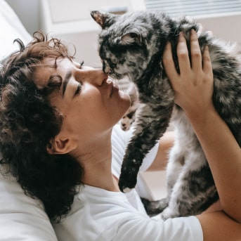
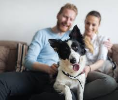

🐾 Quiénes Somos 🐾
Conectamos corazones humanos con animales que necesitan amor, hogar y esperanza.
Nuestra historia
Find My Pet nació como un proyecto con propósito: unir a las personas con animales perdidos, promover la adopción responsable y crear una comunidad solidaria. Nuestra misión es brindar una segunda oportunidad a quienes no tienen voz.

Nuestra misión
Promover la adopción responsable, asistir en la búsqueda de mascotas perdidas y difundir la empatía hacia todos los seres vivos.

Nuestra visión
Soñamos con una sociedad donde cada animal tenga un hogar seguro, amoroso y libre de maltrato.